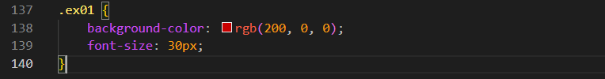

Color Formats
Intro
Aqui iremos ver como funciona as cores em nosso CSS.
Aqui iremos ver como funciona as cores em nosso CSS.
Para podermos verificar as cores do HTML podemos estar acessando o site: HTML color names. Mas para isso precisamos entender melhor as cores para estar utilizando em nosso projeto.
As cores podem variar de acordo com os monitores, as cores tambem variao de: vermelho, verde e azul
Para aplicar as cores iremos usar como exemplo background-color, temos algumas formas de estarmos adicionando uma cor, sendo elas: nome, rgb, rgba e etc.
